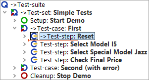
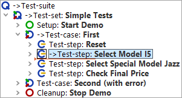
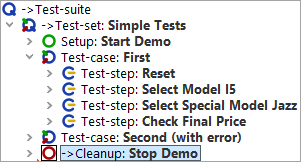

| Version 6.0.3 |
Now let's step through the test-case we set up in the previous section.
You will find that Single step  opens a node containing
child nodes and makes the first child node the active node. Continuing from where
we left the test-suite at the end of the last section, i.e. in debugging
mode, with 'Test-case: First' being the current node, the test-suite would now
look like this:
opens a node containing
child nodes and makes the first child node the active node. Continuing from where
we left the test-suite at the end of the last section, i.e. in debugging
mode, with 'Test-case: First' being the current node, the test-suite would now
look like this:
|
|  | ||
|
| Figure 23.4: Stepping into a node | ||
In the case of leaf nodes (nodes without child nodes), the effect of
 is the same
as the following button's.
is the same
as the following button's.
Step over  runs the current node including all children. Execution pauses at the next node of the same
level to be executed, which then becomes the active one.
runs the current node including all children. Execution pauses at the next node of the same
level to be executed, which then becomes the active one.
|
|  | ||
|
| Figure 23.5: Stepping over a node | ||
Step out  runs the remaining nodes
at the same level including their child nodes. Execution
pauses when a node that is higher in the hierarchical structure is
found, which then becomes the active one.
runs the remaining nodes
at the same level including their child nodes. Execution
pauses when a node that is higher in the hierarchical structure is
found, which then becomes the active one.
|
|  | ||
|
| Figure 23.6: Stepping out of a node | ||
In the given example the node higher in the hierarchical structure where execution stops is the 'Cleanup' node. As explained in the chapter A full Test Run this shows the special behavior of Setup / Cleanup nodes in a test-set: They are executed before and after each test-case to help achieving a proper starting state for each test-case.
Note You will only find this behavior when you started the whole test-suite or test-set and are in debugging mode. If you just selected the test-case and did a step-over action then QF-Test will execute the test-case and then select the next test-case node.
Note
Please be aware that menus or comboboxes tend to close when the application looses the focus,
as will happen when activating the debugging mode. In such a case you should
not stop test execution between the node opening the menu or combobox and the node
performing the selection. One way to do achieve this is to set a break point
after the node performing the selection and to activate normal
test execution by releasing the pause button
 when you reach the node opening the menu or combobox.
when you reach the node opening the menu or combobox.
| Last update: 9/6/2022 Copyright © 2002-2022 Quality First Software GmbH |